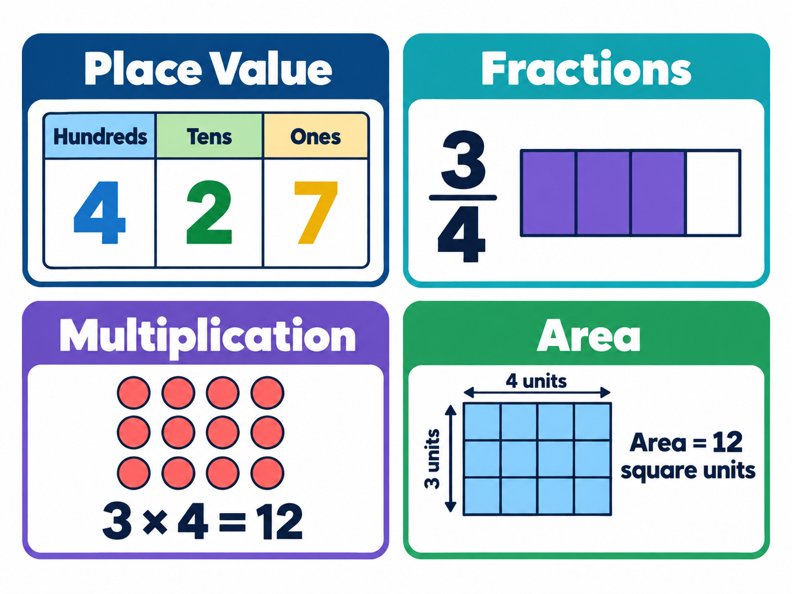
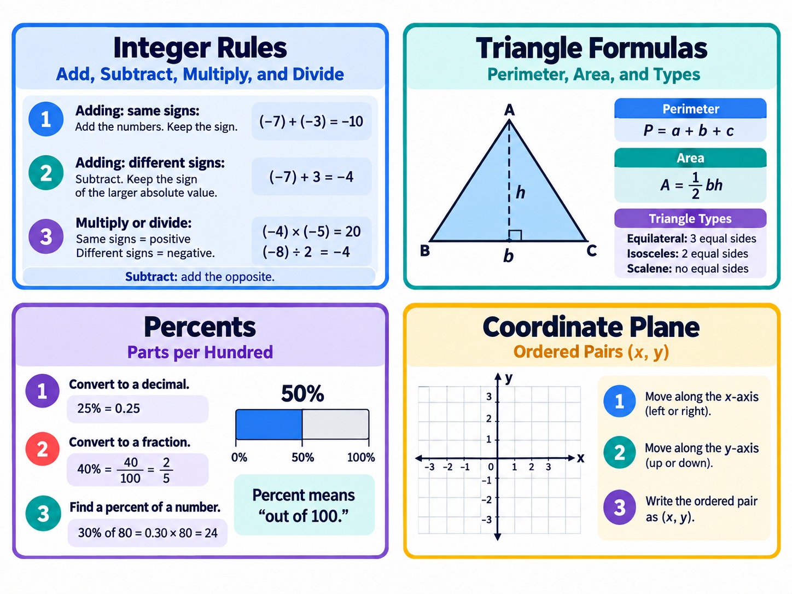

Math collections
Free math printables for grades 3–8 — download, print, and adapt. More collections across the grade band are on the way.

Elementary Math Supplemental Aids
Visual cue cards for elementary math, grades 3–5 — place value, rounding, fractions, multi-digit operations, geometry and measurement, data, and money. Mnemonics, models, and diagrams across the four STAAR math reporting categories. Each concept card includes a printable 4-page activity packet.

Math Supplemental Aids
Visual cue cards for middle school math, grades 6–8 — integer rules, order of operations, fractions and percents, ratios and proportions, expressions and equations, the coordinate plane, slope, and data, plus a one-page measurement formula reference. Each concept card includes a printable 4-page activity packet.
Grades 3–8 math, covered end to end. Also explore the elementary science STAAR aids and middle school science aids.